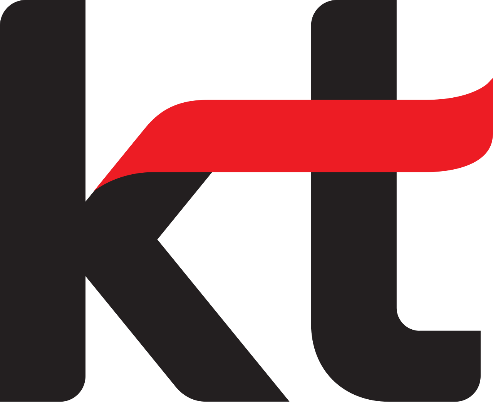

홈 > 브랜드 매거진 > KT
KT
KT(KT Corporation)는 한국의 대표 통신 기업으로, 1981년 한국전기통신공사로 설립돼 2002년 사명을 KT로 바꿨다.
산업 분야 기술·전자 · 공개 등급 자료 기반 · 브랜드 평가 4.5 ★

한눈에 보는 브랜드
KT(KT Corporation)는 한국의 대표 통신 기업이다. 1981년 한국전기통신공사로 설립돼 한국통신을 거쳐 2002년 민영화와 함께 사명을 'KT'로 변경했다.
브랜드 관점
국영 통신공사에서 출발해 완전 민영화된 한국 대표 통신사로, 통신을 넘어 AI·클라우드 기업(AICT)을 지향한다.
시작과 성장
1981년 한국전기통신공사로 출범했다(체신부에서 통신사업 분리). 2001년 사명을 KT로 바꿨고, 2002년 정부지분 완전매각으로 민영화됐다.
브랜드 아이덴티티
유선전화·초고속인터넷·이동통신·IPTV를 아우르는 한국 1호 통신사로, 2009년 국내에 처음으로 아이폰을 도입하며 스마트폰 대중화를 이끌었다.
제품과 서비스
무선통신(5G·LTE), 초고속인터넷, IPTV·미디어를 핵심으로 클라우드·IDC·AI로 사업을 넓혔다. 자회사로 KT클라우드, KT스카이라이프, BC카드 등을 둔다.
사람들
현재 상태
2025년 연 매출 약 28조 원 규모이며, 2025년 분기 기준 창사 이래 처음으로 분기 영업이익 1조 원을 넘어섰다.
타임라인
정리된 연도형 이벤트가 없습니다.